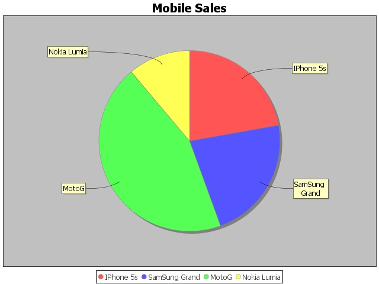

Usando librerías externas¶
GDAL¶
Hemos incluido una de las aplicaciones más comúnes de uso en GDAL que se denomina ogr2ogr. Para usarla desde un script podemos usar las siguientes líneas, modificando las rutas por las de nuestros datos. El resultado es una transformación de un fichero geojson a un shape:
from gvsig import *
from gvsig import uselib
uselib.use_plugin("org.gvsig.gdal.app.mainplugin")
from org.gvsig.gdal.app.mainplugin.common import ogr2ogr
def gdalapp(argsAsString):
import shlex
x = shlex.split(argsAsString)
print "Function: ", x.pop(0)
print "Args: ", x
ogr2ogr.main(x)
def main(*args):
"""ogr2ogr from gdal"""
"""
ogr2ogr.main(["-t_srs", "CRS:84",
"-f",
"ESRI Shapefile",
"C:/temp/j1",
"C:/temp/countries.geojson",
"-overwrite",
"-skipfailures"
])
"""
gdalapp("ogr2ogr -t_srs 'EPSG:4326' -f 'ESRI Shapefile' C://temp//j1.shp D://gvdata//countries023.geojson -overwrite -skipfailures")
loadShapeFile("C:/temp/j1.shp")
jfreechart¶
Una librería que viene con gvSIG es jfreechart y la podemos usar para generar gráficas.
Generar gráfica y guardarla en formato .jpeg en disco.

Código:
from java.io import File
from org.jfree.chart import ChartUtilities
from org.jfree.chart import ChartFactory
from org.jfree.chart import JFreeChart
from org.jfree.data.general import DefaultPieDataset
#Save chart into png file
def main():
dataset = DefaultPieDataset( )
dataset.setValue("IPhone 5s", float( 20 ) )
dataset.setValue("SamSung Grand", float( 20 ) )
dataset.setValue("MotoG", float( 40 ) )
dataset.setValue("Nokia Lumia", float( 10 ) )
chart = ChartFactory.createPieChart(
"Mobile Sales", # chart title
dataset, # data
True, # include legend
True,
False)
width = 640
height = 480
pieChart = File( "D:/pieChart.jpeg" )
ChartUtilities.saveChartAsJPEG( pieChart , chart , width , height )
Otro ejemplo que genera una pantalla con el resultado.
Código:
from org.jfree.chart import ChartFactory
from org.jfree.chart import ChartFrame
from org.jfree.chart import JFreeChart
from org.jfree.data.general import DefaultPieDataset
from org.jfree.ui import RefineryUtilities
"""
* A simple introduction to using JFreeChart. This demo is described in the
* JFreeChart Developer Guide.
* Translated from Java to Jython by Alfonso Reyes
"""
class First:
"""
* The starting point for the demo.
*
* @param args ignored.
"""
# create a dataset...
data = DefaultPieDataset()
data.setValue("Category 1", 43.2)
data.setValue("Category 2", 27.9)
data.setValue("Category 3", 79.5)
# create a chart...
chart = ChartFactory.createPieChart(
"Sample Pie Chart",
data,
True, # legend?
True, #tooltips?
False # URLs?
)
# create and display a frame...
frame = ChartFrame("First", chart)
#frame.setSize(100 , 100) #Position
#RefineryUtilities.centerFrameOnScreen( frame )
frame.pack()
frame.setVisible(True)
def main():
app = First()